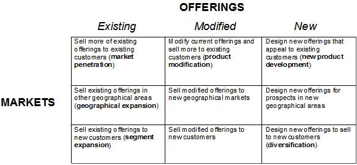
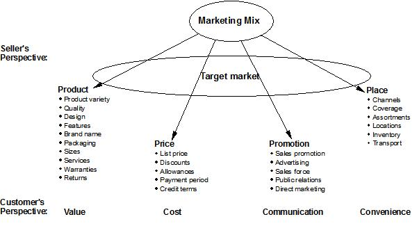

| Artifact: Marketing Product/Service Strategy (BUS 426) |
 |
|
The purpose is to help managers address issues involving the development of new products and services, find new customers for both existing and potential new products and services, and align product/service activities with overall, company-wide strategic objectives. Decision-makers who set the direction for marketing particular products and services should ensure that their activities are consistent with broader strategies and provide support for other products and services when possible. They need to understand where their products fit within the larger portfolio and what activities they can undertake to align their efforts with others. |
| Main Description | Strategic decisions regarding the marketing of individual products and services must be made, just as strategic decisions are made for the larger company. The difference is that the scope is more restricted; it is a subset of the larger company-wide effort. The product/service marketing strategy is typically focused on two major issues—building demand through offerings and customers. Within most markets there are several basic approaches to building demand, as shown in the following table:  In some cases, it may also be appropriate to innovate new value delivery systems and/or enter new markets. In any case, if management can successfully bring new offerings to market and persuade non-customers to become customers for either new or existing offerings, then they have addressed the core issues at the product and service level. Strategies for individual products and services must be coordinated with and subordinated to the overall company strategy. Management must create, distribute, price and promote their offerings within the context of the larger strategy. Top level managers often delegate many of the product and service marketing strategy decisions, but they should be careful to recognize the potential long-term significance of these decisions for the entire company. Careful overview and monitoring will ensure that assets are allocated appropriately and that strategic alignment is maintained. Product and service marketing strategy involves decisions regarding offering definition, target audiences, promotional messages and other critical issues. Vast amounts of information are necessary—from inside and outside the company—to make customer-pleasing, profitable decisions. Management should ensure that the resources are available to optimize the decision-making process and harness relevant information and establish clear direction for those responsible for plan execution. A distinction must be made between strategy and tactics. The purpose of strategy is to decide upon a future state. The purpose of tactics is to define the steps to get there and monitor results. At times the strategic decisions will seem to blur into tactics. Nevertheless, management should maintain the distinction. Slipping into a purely tactical approach can cause decision-makers to lose sight of the potential of an offering to shape a market and/or its role within the larger strategy of the company. This being said, tactics will play a critical role in the ultimate outcome. Management must not lose sight of the importance of tactical decisions regarding actual product, price, place and promotion decisions. Strategy is the first concern for product/service-level decision-makers, just as it is for company board members. Managers responsible for the product or service must determine what they want for a future state. Once that is determined, they can consider tactical actions that will help them achieve their objectives, while remaining aligned with the overall company mission. At this point, they begin to deploy assets—people and money—to execute on the elements of the marketing mix (product, price, place, and promotion). |
|---|---|
| Brief Outline | The product/service marketing strategy is typically a text document that describes the strategy and tactics for
product/service marketing and the economic and environmental basis for the decisions. |
Beware of diversifying without exploiting the existing market for existing products and services. This can result in spreading resources too thinly. A product/service marketing strategy is a long-term decision, based on sound knowledge of internal and external factors. It may require extensive primary and secondary research. It will require senior management buy-in and commitment and sufficient allocated resources. Measurement and control needs to be considered to determine the success of the product/service strategy. Help the client to formulate the product/marketing strategy from an external viewpoint. Sellers often see themselves as selling an offering; customers see themselves buying value or a solution to a problem. The following graphic helps to make the distinction:
 This work product depends on a variety of inputs which may/may not have been completed. It is important that questions are asked, and answers obtained to clarify the company’s overall business strategy. Then, consistency of the product/service marketing strategy before committing the company’s resources to tactical actions. The product/service marketing strategy should be driven by the company’s mission and objectives and balanced against constraints, such as internal resources (organization, budget, capability), in light of what is happening in the marketplace (customer needs, competitors, environmental factors). |
| Impact of not having |
|
|---|---|
| Reasons for not needing |
|
| Guidelines | |
|---|---|
| Supporting Materials | |
| Estimation Considerations |
| © Copyright IBM Corp. 1987, 2012 All Rights Reserved Property of IBM These materials are intended only for use as part of an IBM engagement |